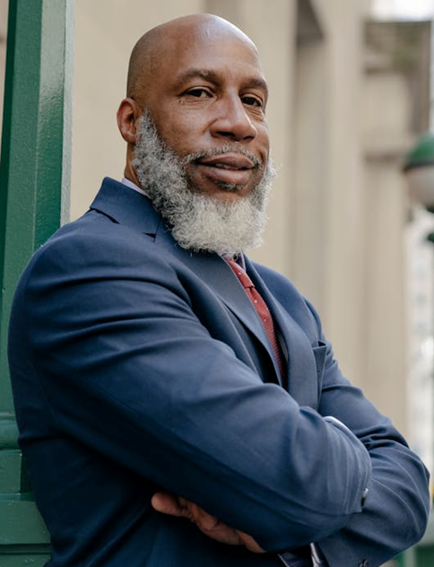
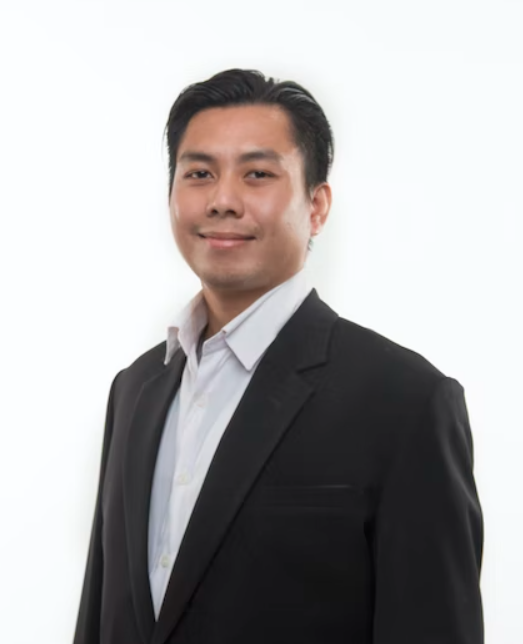
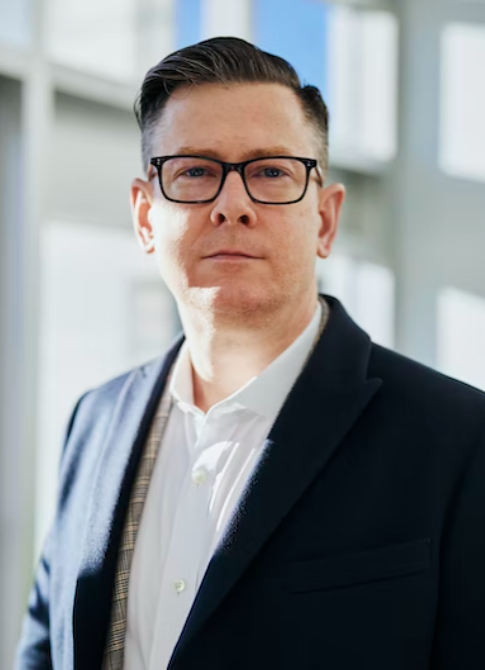
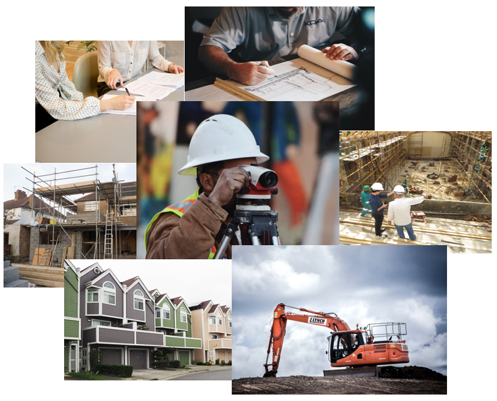

OUR LEADERSHIP

CEO
COLIN HURST
Colin Hurst is the visionary leader and CEO of Eclipse Construction Group, bringing over 20 years of expertise in the construction industry. A graduate of Tennessee State University, Colin has successfully led numerous commercial and residential projects, emphasizing quality, innovation, and sustainability. Under his leadership, Eclipse Construction has grown into a trusted name, known for delivering exceptional craftsmanship and client-focused solutions. His dedication to excellence and strategic growth continues to drive the company’s success in an evolving industry.

LEAD ARCHITECT
KAI GATBATON
Kai Gatboton is a highly skilled architect with over 15 years of experience designing innovative and functional spaces for residential, commercial, and industrial projects. A visionary in modern and sustainable design, Kai blends creativity with practicality to deliver structures that meet both aesthetic and structural excellence. His expertise in architectural planning, 3D modeling, and project coordination ensures that each design aligns seamlessly with client needs and construction feasibility. As Lead Architect at Eclipse Construction Group, Kai is committed to shaping spaces that inspire and endure.

LEAD ENGINEER
Kent Shumer
Kent Shumer is a highly experienced civil engineer with over 12 years of expertise in structural design, site development, and construction management. His strong technical background ensures that every project meets the highest standards of safety, efficiency, and durability. Specializing in commercial and residential developments, Kent works closely with architects and project managers to bring designs to life with precision and innovation. As Lead Engineer at Eclipse Construction Group, he is dedicated to delivering high-quality, structurally sound projects that stand the test of time.
PROJECT MANAGER
JOI DELACROIX
JOI Delacroix is a seasoned Project Manager at Eclipse Construction Group, bringing over a decade of experience in overseeing commercial and residential construction projects. She graduated from Florida State University, and holds a PMP certification. With a strong background in project planning, budgeting, and team coordination, she ensures that every project is completed on time, within budget, and to the highest standards. Joi's leadership, attention to detail, and commitment to client satisfaction make her an integral part of the Eclipse Construction team.

Our Mission
Eclipse Construction Group is a full-service Orlando-based construction firm specializing in Commercial Construction, Strip Centers, Tenant Build-Outs, Offices, Renovations, Industrial Projects, Residential Communities, and Custom Homes. br We’re driven to exceed our client’s needs, and pride ourselves on knowledgeable design and craftsmanship. With over 20+ years in real estate, office construction, and development, our team features a list of carefully selected engineers, architects, subcontractors, and suppliers. Being transparent, reliable, and trustworthy is a mission we take seriously with our general contractors, from the very beginning until the end. No matter what the project is, trust that you are in dedicated hands.